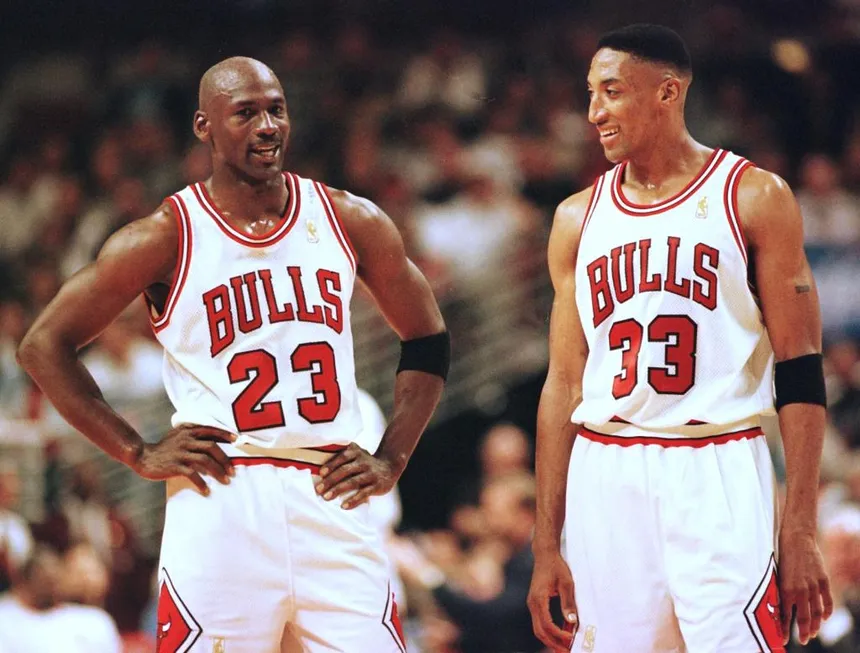
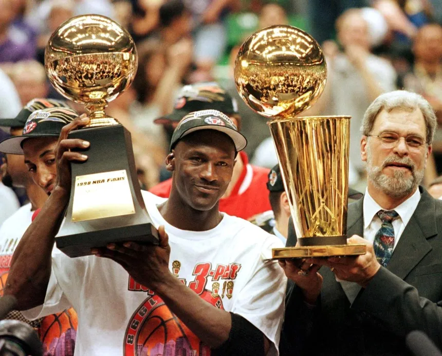

Мајкл Џордан, познат како "Џордан", e легендарен кошаркар и икона на светскиот спорт. Неговата кариера и приказниот талент го направија еден од највлијателните спортисти во историјата. Неговите достигнувања, стил на игра и влијание излегоа надвор од кошарката,
го внесоа во пантеонот на спортските величини.
Мајкл Џордан ја започна својата кариера како играч во Чикаго Булс, каде брзо стана во ѕвезда и водеше тимот до шест наслови во Националната баскетбалска асоцијација (НБА). Неговиот агресивен стил на игра, способноста да се издигне над сите и извонредните потези под кошот го правеа непобедлив.
Но Мајкл Џордан беше повеќе од сè тоа. Тој беше лидер, мотиватор и вистинска спортска икона, кој ги внесе вредностите на работна етика и посветеност во светот на спортот. Неговата лична историја, како од бедно детство стигна до светската слава, ја прави неговата приказна уште поинтересна.
На нашиот веб сајт, ние се обидовме да ги обединиме најважните моменти од неговата кариера и да ви ги прикажеме во најдобра светло. Прочитајте повеќе за неговите најголеми постигнувања, како што се шестиот пат најдобриот стрелец во историјата на НБА и неговите бројни индивидуални награди.
Мајкл Џордан не го промени само начинот на кој се играше кошарката, туку и начинот на кој го гледаме спортот во целост. Неговата посветеност, работна етика и врвен перформан во секој момент на играта го направија вистинскиот капитен и лидер на својот тим.
Мајкл Џордан не може да биде спомнуван без неговиот најдобар соиграч, Скоти Пипен. Скоти Пипен беше неодделен дел од Џордановата кариера во Чикаго Булс и заедно ги возеа тимот кон многу наслови и успеси. Нивната соработка беше клучна во формирањето на еден од најдоминантните тимови во историјата на НБА, а Пипеновите вештини во одбраната и давањето на асистенции допринесоа кон успехот на Џордан и Булс.
Фил Џексон, легендареното име во светот на кошарката, беше недвосмислено важен дел од успехот на Мајкл Џордан и Чикаго Булс. Во својата улога како главен тренер на тимот, Џексон успеа да го ориентира и инспирира Џордан и неговите соиграчи кон многу наслови и успеси. Неговите тренерски вештини и филозофија на играта го трансформираа Булс во доминантна сила во НБА и го обликуваа Џордан како играч и лидер. Со мудроста и менталната сила на Фил Џексон, Џордан и неговите соиграчи ги постигнаа неверојатните успеси кои остануваат вечни во историјата на кошарката.
